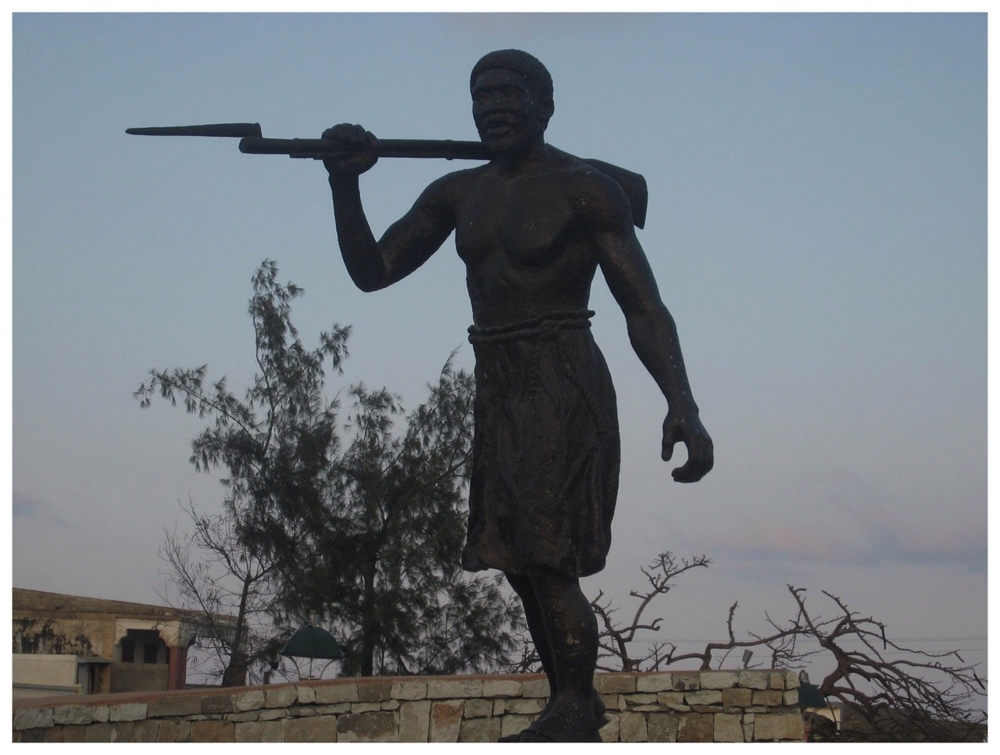

Goman, Jean-Baptiste Perrier
« Tu n'étais qu'une plaie, qu'importe, tu n'avais pas abdiqué, toi. »
Félix ViardGoman, de son vrai nom Jean-Baptiste Perrier, était un Africain d'ethnie congo. Captif conduit à St-Domingue, travaillant pour un colon de la plaine des Cayes, il se fit marron très tôt, et prit la tête de l'insurrection des Platons en 1792-1793, avec Nicolas Régnier et Gilles Bénech. Il devint après le triomphe de la Révolution de 1804, chef du 2e bataillon de la 19e demi-brigade cantonnée à l'Anse-d'Hainault.
À la mort de l'Empereur le 17 octobre 1806, et craignant sans doute un retour à l'esclavage, notamment dans le sud « aristocratique », dominé par les affranchis, anciens propriétaires d'esclaves, il leva l'Étendard de la Révolte en février 1807 et se proclama le vengeur de Dessalines.
La majorité des nouveaux paysans de la Grand'Anse et un grand nombre de soldats se joignirent au mouvement insurrectionnel. Ses troupes très disciplinées selon Madiou se sont battues dans des conditions très difficiles avec un courage exemplaire, mélangeant guerre conventionnelle et tactiques de guérilla.
L'historien Lepelletier de Saint-Rémy explique l'épopée de Goman et des paysans rebelles de la Grand'Anse comme une tentative de créer un état permanent à l'instar de celui de Port-au-Prince, mais à partir d'un autre projet. Dans cette même optique, Tadeus Lepkowski, historien polonais décédé en 1989, parle de « démocratie agraire » et de « l'État révolutionnaire de Goman ». Soulignant en outre le développement de l'agriculture dans toutes les zones sous contrôle du mouvement.
Cette extraordinaire insurrection paysanne dura environ treize (13) ans. Et la disparition physique de Goman peut se situer vers le 23 février 1820.
Le mouvement insurrectionnel des paysans de la Grand'Anse sous la direction de Goman fut la première grande bataille organisée de la paysannerie haïtienne. Ce large mouvement, par son organisation, sa discipline, l'ampleur de l'adhésion qu'il a suscitée parmi les cultivateurs et les militaires, notamment le simple soldat, la longue durée de l'insurrection, l'intensité des combats, a marqué le monde paysan. Les sociétés paysannes (Société Congo de La Gonâve, Société Olandè, Société djouba de Marbial, etc.) dans leur originalité, leur philosophie et leur organisation, pourraient être considérées aussi comme le legs de cette bataille. Laquelle a contribué à façonner, selon un historien haïtien, les contours de l'histoire économique de la paysannerie haïtienne et aussi, celle du Peuple haïtien.
Myrtha Gilbert
21 février 2021
Sources consultées
- Beaubrun Ardouin, Études sur l'Histoire d'Haïti, publiées pour la première fois entre 1853 et 1860
- Michel Hector, Crises et Mouvements populaires en Haïti, deuxième édition, 2006
- Thomas Madiou, Histoire d'Haïti, tome IV 1807-1811 ; tome V 1811-1818 ; tome VI 1819-1820
- Tadeus Lepkowski, Haïti, les débuts de l'État et de la Nation ; première édition, 1964 ; traduction française Serge Rousseau, 2018
- R. Lepelletier de Saint-Rémy, St Domingue, Étude et Solution nouvelle de la question haïtienne, Paris, 1846
- Myrtha Gilbert, La Révolte de Goman et le mouvement insurrectionnel de la Grand'Anse, 2020